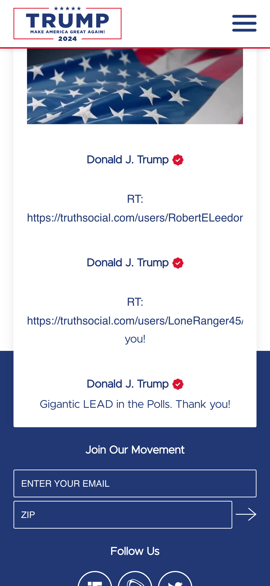

Visual Hierarchy
Yugioh
yugioh-card.comVisual hierarchy is the principle of arranging elements to show their order of importance. In the Yugioh website, they demonstrate this by displaying a large image of their new booster pack they are currently marketing. This shows what they want their audience to see first and be interested in purchasing.
Hick's Law
Instagram's use of the double tap function to like photos is an example of Hick's Law. This allows users to quickly like a photo and then immediately continue scrolling down their newsfeed. In this way, users are either scrolling, reading, or liking photos and videos.
Repetition
Donald J. Trump Official Website
donaldjtrump.com The principle of repetition helps with making a brand or statement have importance. An example of this can be seen in Donald Trump's official website. There is a repetition of Trump's name to emphasize to visiors of the page that he is the focus of the website.